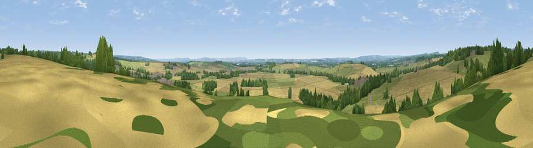

Viewpoint near Sinnington
#18428 in England · top 42% of its area beats it · near Sinnington · access?Where it is
The exact computed spot (SE 73325 85875). Click the marker for map links.
Public access: no public right of way or access land is recorded at this exact spot — it may be on private land. Computed from Natural England's CRoW access layer and OpenStreetMap rights of way — not the legal definitive map. Always verify locally.
The view, rendered

A 360° render of this exact spot computed from the terrain model, tree cover and land cover — summer colours, afternoon light, calibrated against photographs of famous viewpoints. Real trees, hedges and buildings will differ in detail.
The panorama
Grey silhouette: terrain skyline in each direction (720 bearings, Earth curvature and refraction included). Dashed green: skyline with trees (+15 m) and buildings (+8 m) as obstacles. Blue strip: how far the ground is visible on each bearing.
Where the view opens
Wedge length = distance to the farthest visible ground on that bearing (vegetation-aware). Rings at 10, 25 and 50 km.
What fills the view
47% cropland · 34% grassland · 18% woodland · 1% built-up
Angular shares of the visible panorama (visual magnitude), not map area. Landscape diversity 0.47 (0–1 Shannon).
Key numbers
More beautiful places nearby
The staircase of upgrades: each row has a higher view potential than everything closer. Driving times are estimates from straight-line distance, calibrated against real road routing — check an actual route before setting out.
| Place | Direction | Drive | Score |
|---|---|---|---|
| Viewpoint near Marton | SSW · 2 km | ~6 min | 54.9 |
| Viewpoint near Sinnington | SE · 3 km | ~7 min | 55.6 |
| Viewpoint near Marton | SE · 3 km | ~8 min | 58.3 |
| Viewpoint near Cropton | NNE · 4 km | ~10 min | 61.5 |
| Ana Cross | N · 8 km | ~16 min | 65.9 |
| Viewpoint near Gillamoor | NW · 8 km | ~17 min | 67.2 |
| Viewpoint near Gillamoor | NW · 9 km | ~17 min | 72.8 |
| Viewpoint near Ampleforth | WSW · 15 km | ~27 min | 76.6 |
54.26329, -0.87578 · source: screening · position refined by local search. Computed location — check access rights before visiting.